准备送审 · iPhone、iPad 与 Mac · iOS / iPadOS 16.0+ · macOS 13.0+
准备送审 · iPhone、iPad 与 Mac · iOS / iPadOS 16.0+ · macOS 13.0+ VPN TP
在设备本地解析、检查、整理与转换网络配置。支持分享前脱敏、结构比较、二维码和加密备份；不建立 VPN 连接，不提供服务器，也不转发网络流量。

多格式导入
识别常见配置 URI，以及 JSON、YAML、CSV、WireGuard 和 OpenVPN 文本，批量呈现解析失败、重复项与结构问题。
脱敏与比较
提供轻度、标准和完全三种脱敏等级，以统一字段比较两份配置，并默认隐藏敏感字段变化。
转换前先说明
导出目标格式前先列出无法转换或将被忽略的字段，减少静默丢失和错误配置。
二维码工具
扫描、识别和生成配置二维码；默认生成脱敏内容，包含敏感字段时会先警告并请求设备身份验证。
本地安全保护
敏感内容由系统钥匙串保护，完整备份使用 AES-GCM 加密。应用不保存备份密码，也不会上传导入的配置。
8 种界面语言
支持系统语言、English、简体中文、繁體中文、日本語、한국어、Español、Français 与 Deutsch，设置后立即生效。
SUBMISSION BUILD · 2026.08.31
真实、清楚、可安全演示
iPhone、iPad 与 Mac 均配有浅色界面和本地安全示例，便于了解完整流程。
- 11 条安全展示数据只使用保留域名、文档专用 IP 与无效测试凭据，不含实时订阅或可用服务器。
- 导入与导出逐项说明识别结果、风险提示和格式兼容性，普通导出默认排除敏感字段。
- 语言可随时切换在“设置 → 通用 → App 语言”中选择，界面无需重启即可更新。
- 明确的产品边界这是配置管理工具，不使用 NetworkExtension，不建立系统 VPN，也不提供线路。
MAC · 2880 × 1800
Mac 展示图
为桌面重新组织的侧边栏、三栏配置库、右上角 VPN TP 菜单栏入口与可调整窗口，最低支持 macOS 13。
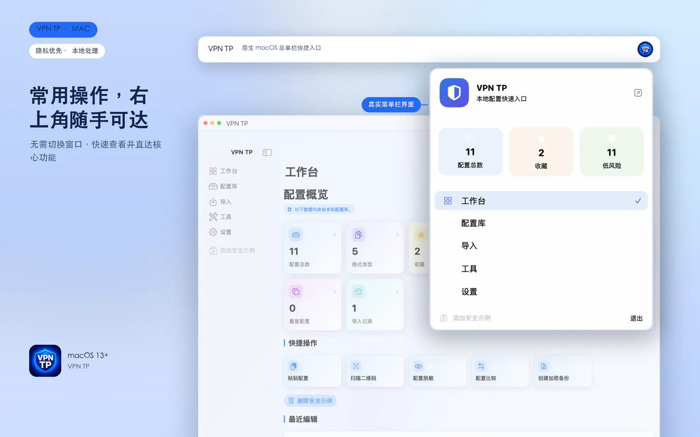
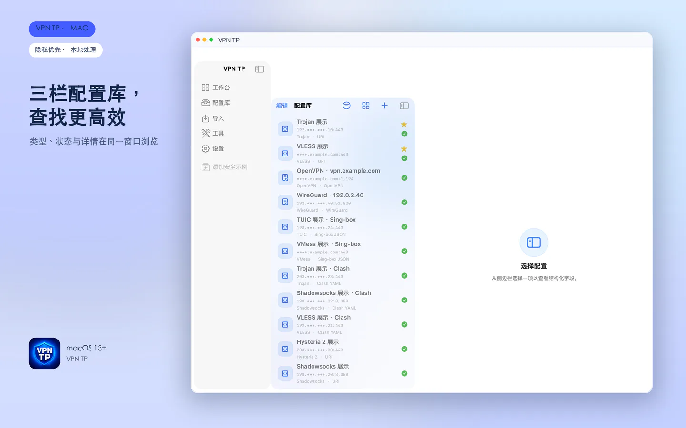
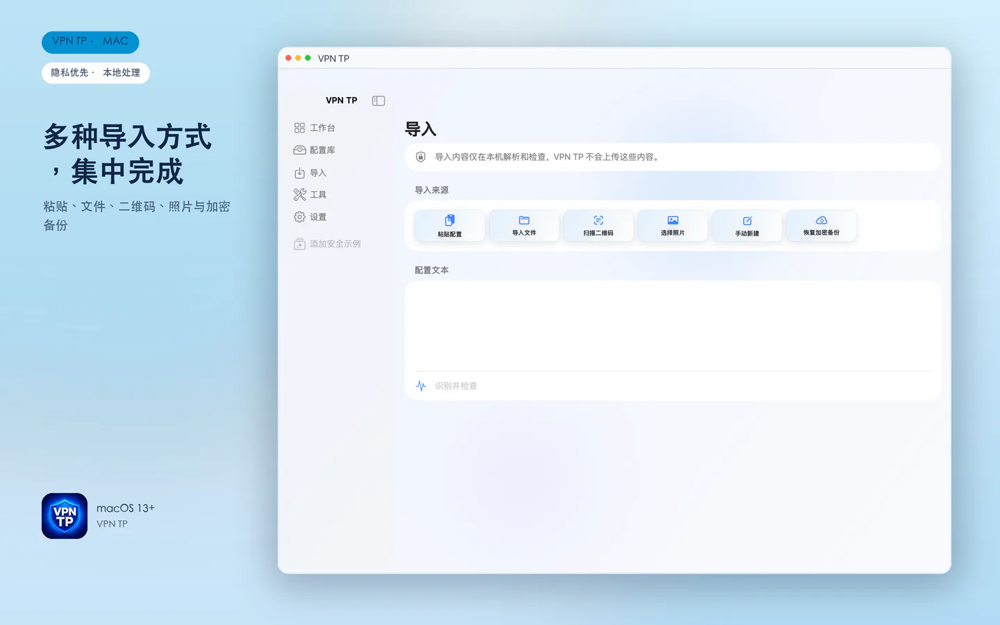
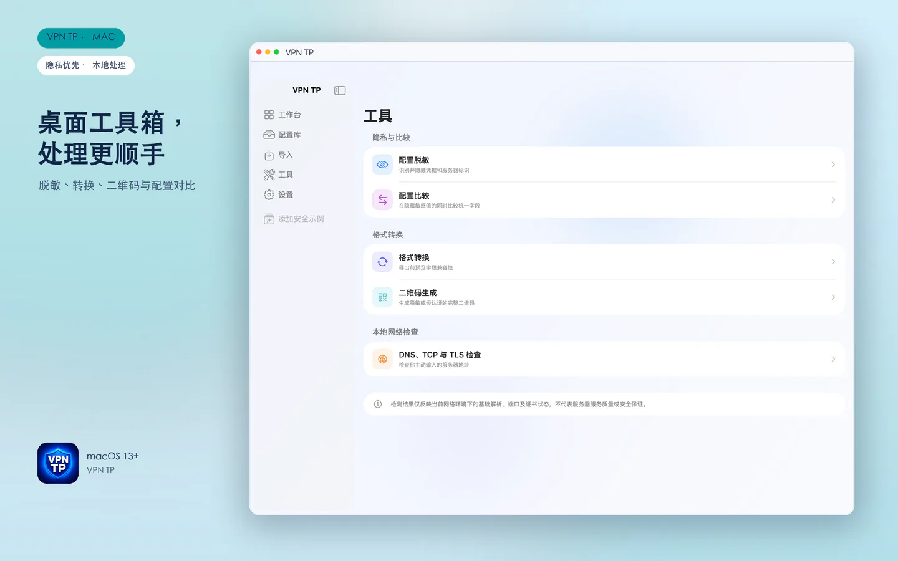
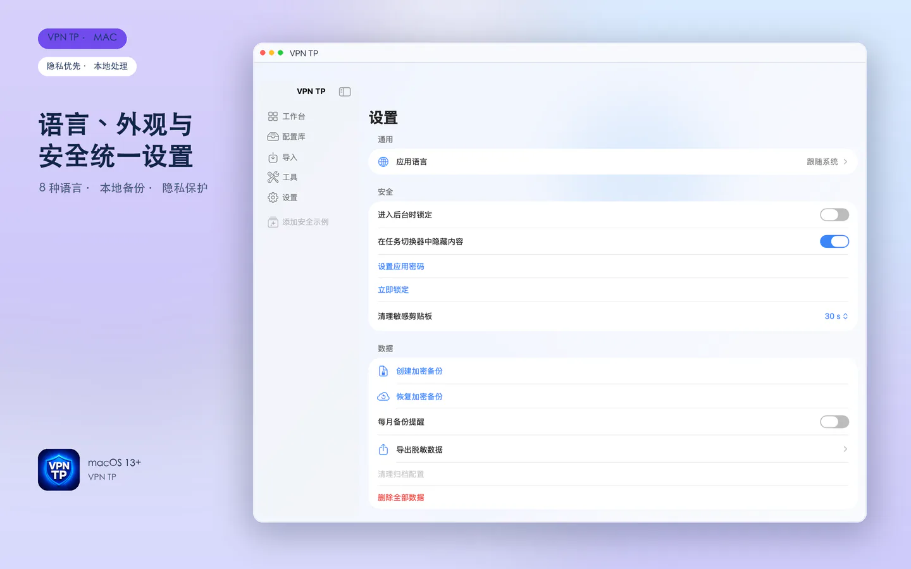
IPHONE 6.5-INCH
iPhone 展示图
从配置工作台到导入、脱敏、转换、二维码和安全检查，完整呈现浅色界面。

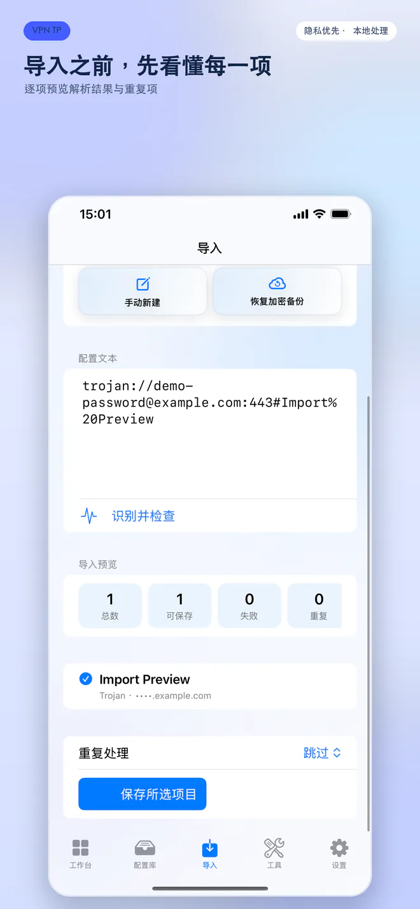
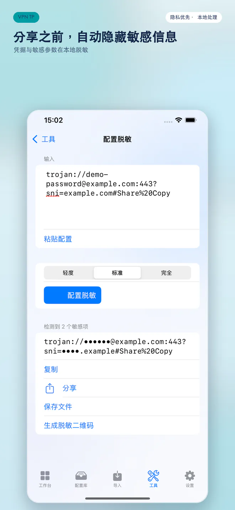
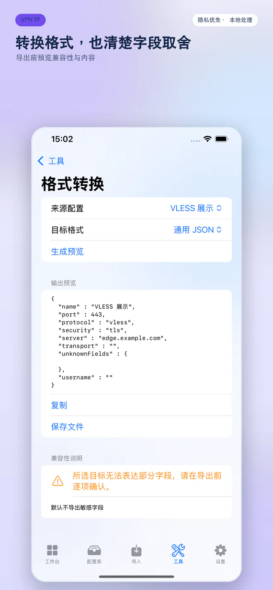
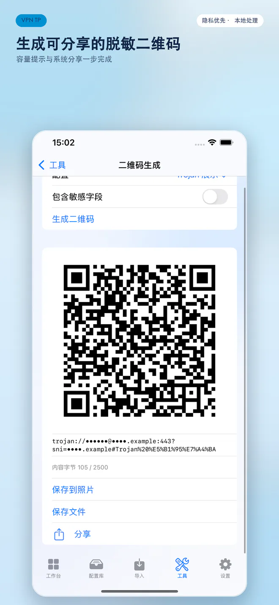
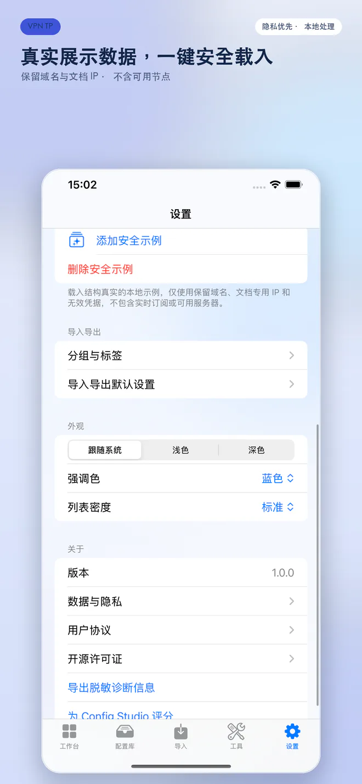
IPAD 13-INCH
iPad 展示图
针对大屏重新排布的配置工作区、资料库、导入、脱敏、二维码与设置页面。
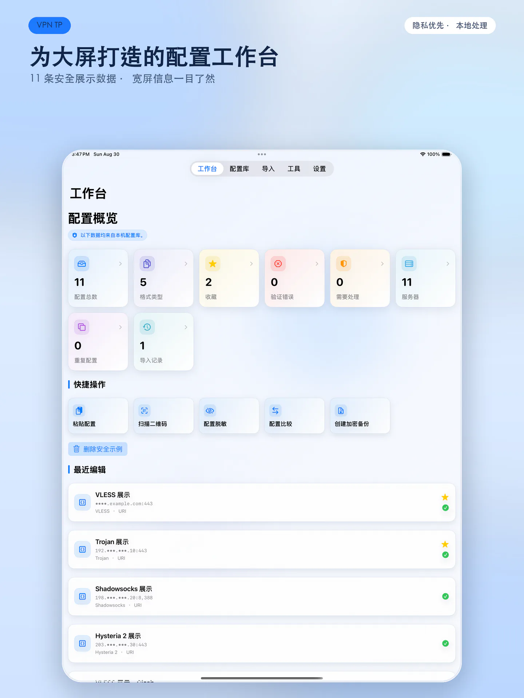
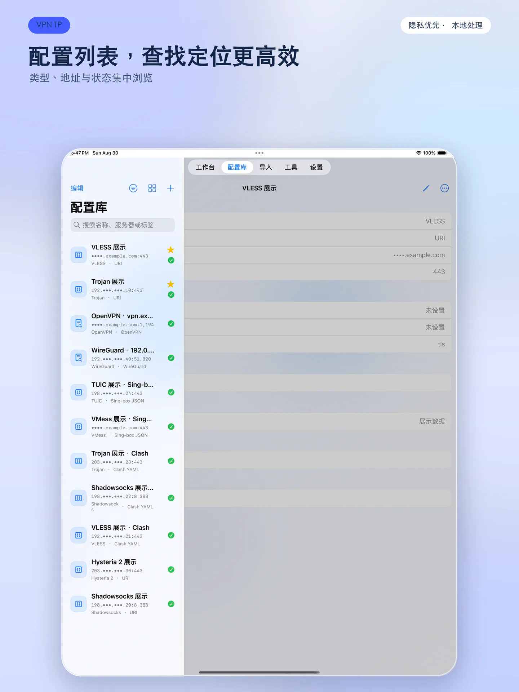
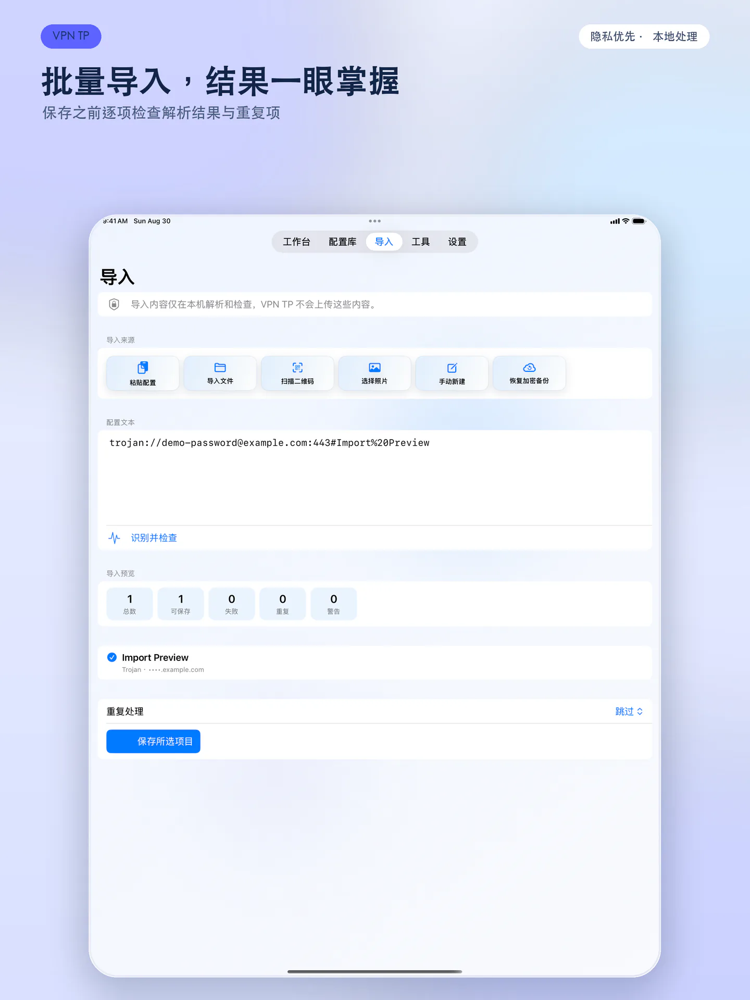
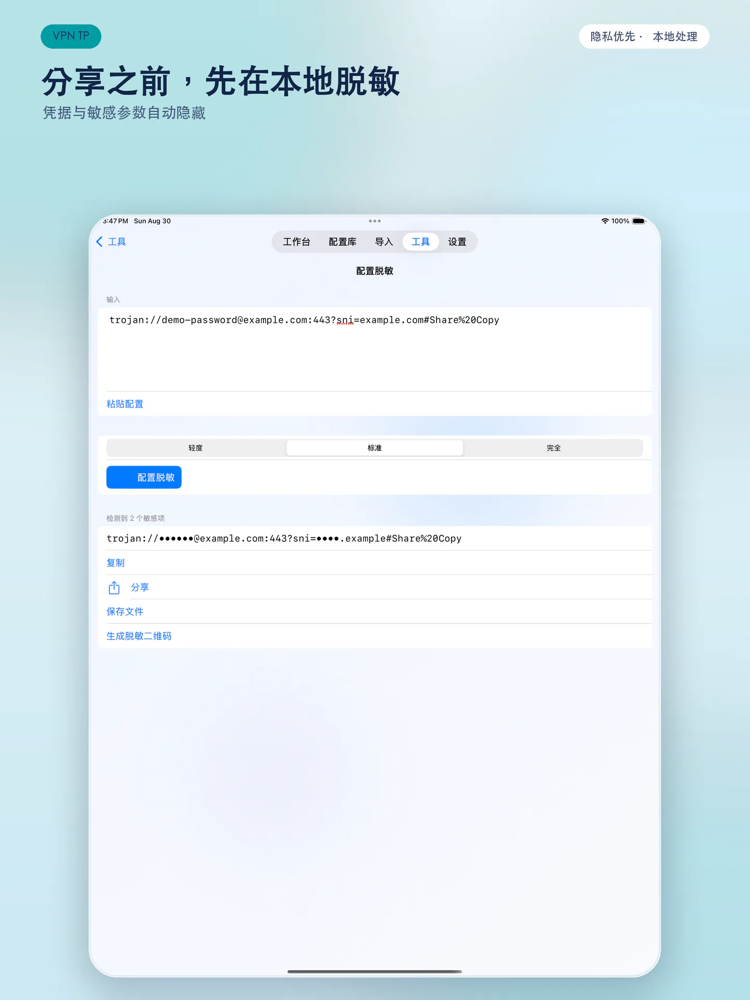
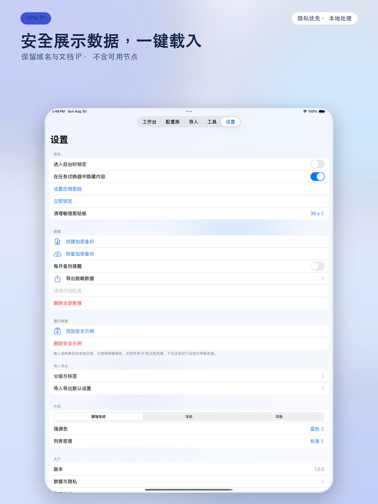